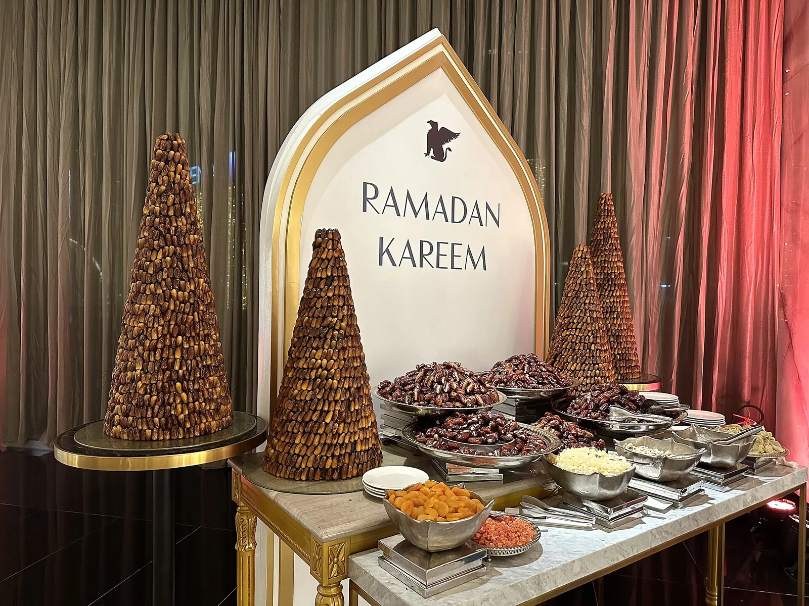

Panduan Cerdas Belanja Oleh-Oleh Umrah: Berapa Realistis Anggaran Riyal Tanpa Kena Denda Overweight Koper?
Hitung anggaran riyal, konversi rupiah, dan beban koper Anda sebelum membeli — bukan setelah antre di konter check-in.

Hampir setiap jamaah mengalami momen yang sama di hari-hari terakhir: koper yang berangkat setengah kosong tiba-tiba tidak muat, dan timbangan di lobi hotel menunjukkan angka yang bikin panik. Oleh-oleh memang bagian tak terpisahkan dari perjalanan umrah — ada amanah dari keluarga, tetangga, rekan kerja, dan pengajian. Masalahnya bukan pada niat berbaginya, melainkan pada perencanaan yang nyaris selalu dilakukan terlambat.
Artikel ini menyusun kerangka belanja yang realistis: berapa riyal yang wajar Anda siapkan, di mana membelinya agar tidak membayar dua kali lipat, bagaimana menggesek kartu tanpa terjebak kurs ganda, dan — yang paling sering diabaikan — berapa kilogram beban yang sebenarnya Anda tambahkan ke koper. Di tengah artikel, tersedia simulator interaktif agar Anda bisa menghitungnya sendiri sebelum berangkat.
1Jebakan Lokasi Belanja: Ring 1 vs Pasar Grosir
Kesalahan paling mahal dalam belanja oleh-oleh umrah bukan membeli terlalu banyak — melainkan membeli di tempat yang salah. Toko-toko di pelataran Masjidil Haram, di lantai dasar hotel Ring 1, atau di koridor menuju pintu masjid, menanggung biaya sewa lapak yang sangat premium. Biaya itu tidak hilang; ia diteruskan ke label harga.
Toko-toko tersebut menyasar pembeli yang membeli karena kepraktisan: jamaah yang baru selesai shalat, lelah, dan tidak ingin pergi jauh. Mereka tahu Anda tidak akan membandingkan harga. Sementara itu, hanya 15–25 menit berkendara dari Masjidil Haram, Pasar Grosir Kakiyah menjual barang yang sama dengan struktur harga yang sama sekali berbeda. Hal serupa berlaku di Madinah dengan Pasar Kurma (Souq Tamr) di kawasan Qurban.
| Barang | Toko Ring 1 (pelataran/hotel) | Pasar Grosir (Kakiyah / Pasar Kurma) | Selisih |
|---|---|---|---|
| Kurma Ajwa (per kg) | SAR 85 – 100 | SAR 45 – 60 | ± 40% |
| Kurma Sukari (per kg) | SAR 40 – 50 | SAR 20 – 28 | ± 45% |
| Cokelat kerikil / kacang Arab (per kg) | SAR 55 – 70 | SAR 30 – 40 | ± 40% |
| Tasbih, peci, sajadah mini (per pcs) | SAR 25 – 35 | SAR 10 – 18 | ± 50% |
| Sajadah ukuran dewasa (per pcs) | SAR 60 – 90 | SAR 35 – 50 | ± 40% |
Selisih 30%–50% ini bukan angka teoretis. Pada belanja senilai SAR 600, memilih pasar grosir berarti menghemat SAR 200–280 — setara Rp950 ribu hingga Rp1,3 juta. Cukup untuk menambah satu kilogram Ajwa premium, atau justru disimpan sebagai dana cadangan.
Strategi praktis di lapangan
- Survei dulu, beli belakangan. Di hari-hari awal, catat harga di 2–3 toko. Jangan membeli di hari pertama saat semuanya masih terasa murah karena belum ada pembanding.
- Manfaatkan jadwal city tour. Banyak rombongan melewati atau singgah di area pasar grosir. Tanyakan ke muthawwif sejak awal apakah ada slot khusus belanja.
- Beli borongan bersama rombongan. Membeli 10 kg kurma bersama tiga jamaah lain hampir selalu membuka harga grosir yang tidak Anda dapatkan sendirian.
- Cek kualitas, bukan hanya harga. Ajwa asli Madinah bertekstur kering-lembut dan tidak lengket berlebihan. Harga terlalu murah untuk label "Ajwa" biasanya menandakan varietas lain.
2Trik Transaksi Finansial: Hindari Dynamic Currency Conversion
Ini adalah kebocoran anggaran yang paling tidak disadari jamaah. Saat Anda menggesek kartu debit atau kredit berlogo Visa/Mastercard di mesin EDC toko Saudi, layar sering menampilkan pilihan: bayar dalam SAR (riyal) atau dalam IDR (rupiah). Melihat angka rupiah terasa melegakan — Anda langsung tahu berapa yang keluar. Justru di situlah jebakannya.
Fitur ini bernama Dynamic Currency Conversion (DCC). Ketika Anda memilih IDR, kurs yang dipakai bukan kurs jaringan Visa/Mastercard, melainkan kurs yang ditetapkan sepihak oleh penyedia mesin EDC atau merchant. Selisihnya umumnya 3%–7% lebih buruk dari kurs jaringan kartu — dan itu belum termasuk biaya transaksi luar negeri dari bank Anda.
| Skenario belanja SAR 600 | Pilih tagihan SAR (benar) | Pilih tagihan IDR / DCC (keliru) |
|---|---|---|
| Kurs yang dipakai | Kurs jaringan Visa/Mastercard (± Rp4.750) | Kurs sepihak mesin EDC (± Rp5.050) |
| Nilai tagihan | Rp 2.850.000 | Rp 3.030.000 |
| Selisih kerugian | — | ± Rp 180.000 (satu transaksi saja) |
Bayangkan Anda bertransaksi 5–6 kali selama perjalanan. Kerugian akumulatifnya bisa menembus Rp700 ribu–1 juta — nilai yang sama dengan 2 kg kurma Ajwa, hilang tanpa Anda sadari.
Aturan sederhana yang wajib diingat
- Selalu pilih SAR. Bila layar EDC menawarkan "Pay in IDR" atau menampilkan nominal rupiah, tolak dan pilih mata uang lokal. Biarkan jaringan kartu yang mengonversi.
- Periksa struk sebelum tanda tangan. Bila struk tercetak dalam IDR padahal Anda memilih SAR, minta transaksi dibatalkan dan diulang.
- Berlaku juga di ATM. Saat menarik tunai, mesin akan menawarkan "conversion with guaranteed rate" — tolak, pilih "without conversion" atau lanjutkan dalam SAR.
- Bawa kombinasi. Uang tunai riyal untuk pasar grosir dan pedagang kecil yang tidak menerima kartu; kartu untuk transaksi besar di toko resmi.
- Kabari bank sebelum berangkat. Aktifkan notifikasi transaksi luar negeri agar kartu tidak terblokir otomatis saat pertama digesek di Saudi.
Menghemat 5% dari kurs terdengar kecil — sampai Anda menyadari itu adalah selisih antara pulang membawa 8 kg kurma atau 9 kg kurma dengan uang yang persis sama.
3Simulator: Hitung Anggaran & Beban Koper Anda
Sebelum melanjutkan ke strategi pengepakan, gunakan simulator di bawah ini. Atur kurs sesuai kondisi terkini, lalu sesuaikan jumlah tiap barang. Perhatikan bukan hanya total rupiahnya, tetapi juga total bobot — karena itulah angka yang akan diperiksa di konter check-in.
Kalkulator Belanja & Beban Koper
Estimasi berbasis harga pasar grosir. Ubah kurs dan kuantitas sesuai rencana Anda.
Kurma Ajwa Madinah
Kurma Sukari Basah
Sajadah & Suvenir Mini (Tasbih/Peci)
Cokelat Kerikil / Kacang Arab
Paket Data & SIM Card Lokal Saudi
*Harga adalah asumsi rata-rata pasar grosir untuk simulasi perencanaan, bukan penawaran resmi. Harga aktual bervariasi menurut kualitas, musim, dan lokasi toko.
4Strategi Pengepakan & Ambang Batas Bagasi Maskapai
Angka bobot dari simulator di atas baru bermakna bila dibandingkan dengan jatah bagasi Anda. Untuk penerbangan umrah, jatah bagasi tercatat umumnya berada di kisaran 25 kg hingga 30 kg per jamaah, ditambah 7 kg bagasi kabin. Maskapai full service seperti Garuda Indonesia dan Saudia biasanya berada di batas atas kisaran ini; sebagian rute charter atau maskapai transit bisa lebih ketat.
| Alokasi | Berat wajar | Catatan |
|---|---|---|
| Pakaian & perlengkapan pribadi | 8 – 10 kg | Termasuk ihram, mukena, obat pribadi, dan alas kaki. |
| Oleh-oleh | 12 – 15 kg | Zona aman. Di atas 15 kg, risiko overweight meningkat tajam. |
| Cadangan / barang tak terduga | 2 – 3 kg | Buffer untuk titipan mendadak atau pembelian di hari terakhir. |
| Total bagasi tercatat | ± 25 – 28 kg | Masih di bawah ambang denda |
a. Air zamzam: jangan pernah masukkan ke koper
Ini kesalahan klasik yang mahal. Air zamzam resmi diberikan maskapai dalam kemasan 5 liter tersegel, diproses terpisah, dan tidak memotong jatah berat bagasi Anda. Anda akan menerimanya di conveyor belt setibanya di tanah air. Memindahkan zamzam ke koper pribadi berarti membuang 5 kg kuota berat secara percuma — dan berisiko ditolak karena aturan cairan.
Perlu diingat pula: membawa cairan dalam botol pribadi ke kabin akan dicegat pemeriksaan keamanan (batas umumnya 100 ml per wadah). Jangan mencoba menyiasatinya.
b. Menyusun barang cair & mudah pecah
- Parfum, minyak wangi, dan madu wajib masuk bagasi tercatat, bukan kabin. Bungkus tiap botol dengan plastik rapat lalu lapisi pakaian di sekelilingnya.
- Posisikan di tengah koper, dikelilingi barang lunak. Jangan tempatkan di sisi luar yang rawan benturan saat bagasi dilempar.
- Kurma dalam kemasan vakum lebih hemat ruang dan tidak lengket dibanding kemasan kotak kardus. Buang kardus luarnya bila memungkinkan — bisa memangkas 0,5–1 kg.
- Suvenir keras (tasbih kayu, miniatur) dibungkus terpisah agar tidak merobek isi lain.
c. Taktik distribusi berat
- Timbang sebelum ke bandara. Bawa timbangan koper digital kecil (± Rp50 ribu, berat 100 gram). Investasi terbaik untuk menghindari denda ratusan ribu.
- Manfaatkan bagasi kabin secara cerdas. Barang padat dan ringan seperti sajadah tipis atau peci bisa dipindah ke tas kabin bila koper mendekati batas.
- Kenakan yang berat. Jaket dan sepatu paling berat sebaiknya dipakai saat penerbangan, bukan dimasukkan koper.
- Bagi beban dalam rombongan keluarga. Bila berangkat berdua atau bertiga, jatah bagasi biasanya dihitung per orang — koper yang satu bisa menutupi kelebihan koper lainnya.
- Siapkan koper lipat cadangan. Koper kain lipat seberat 1 kg bisa menyelamatkan Anda bila belanja melebihi rencana, jauh lebih murah daripada denda per kilogram.
Rencanakan Keberangkatan & Checklist Persiapan Anda
Tim Nahdi Tour siap membantu Anda menyusun rencana keberangkatan sekaligus mengirimkan checklist persiapan umrah — mulai dari dokumen, perlengkapan medis, hingga panduan bagasi. Diskusi netral, tanpa tekanan penjualan.
Konsultasi via WhatsAppAnda juga bisa memperkaya persiapan dengan membaca checklist perlengkapan medis & dokumen esensial serta panduan bagaimana travel seharusnya mengatasi delay dan koper tertinggal.
Pertanyaan yang Sering Diajukan
Berapa anggaran riyal yang realistis untuk oleh-oleh umrah?
Untuk paket standar keluarga (3 kg Ajwa, 5 kg Sukari, 10 suvenir mini, 2 kg cokelat, 1 SIM card), anggaran berkisar SAR 550–650 atau setara Rp2,6–3,1 juta pada kurs Rp4.750. Bobotnya sekitar 12,5 kg — masih aman untuk jatah bagasi 25–30 kg.
Lebih murah belanja di toko bawah hotel atau pasar grosir?
Pasar grosir 30%–50% lebih murah. Toko Ring 1 menanggung sewa lapak premium yang diteruskan ke harga jual.
Apa itu Dynamic Currency Conversion?
Tawaran mesin EDC untuk menagih dalam rupiah, bukan riyal. Kursnya ditetapkan sepihak dan 3%–7% lebih buruk. Selalu pilih tagihan dalam SAR.
Berapa jatah bagasi umrah?
Umumnya 25–30 kg bagasi tercatat plus 7 kg kabin. Alokasikan maksimal 12–15 kg untuk oleh-oleh dan timbang koper sebelum ke bandara.
Bolehkah membawa air zamzam di dalam koper?
Tidak perlu. Zamzam 5 liter diberikan maskapai dalam kemasan tersegel dan diproses terpisah tanpa memotong jatah berat koper Anda.
Penutup
Belanja oleh-oleh bukan sekadar soal berapa banyak yang bisa Anda bawa pulang, melainkan soal berapa banyak keputusan yang Anda ambil secara sadar. Tahu selisih harga antara pelataran dan pasar grosir, menolak DCC di layar EDC, dan menghitung bobot koper sebelum membeli — tiga kebiasaan sederhana ini bisa menghemat jutaan rupiah sekaligus menghapus kecemasan di hari kepulangan.
Pada akhirnya, oleh-oleh terbaik dari Tanah Suci bukanlah yang paling berat di koper, melainkan ketenangan hati yang Anda bawa pulang — karena perjalanan Anda direncanakan dengan matang dari awal hingga akhir. Semoga Allah menerima ibadah kita semua. Aamiin.